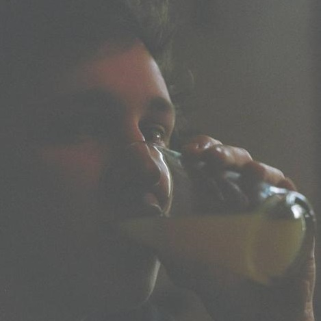

Agustin Wicki
Soy berazateguense, fan del portuñol, hincha de la gastronomia y barra de las habladurías musicales. A mis viejos se les fue la mano con eso de inculcarme el pensamiento crítico y quedé hecho un denso.

Somos un medio latinoamericano dedicado a pensar la música que te (y nos) gusta. Iniciamos oficialmente el 10 de septiembre de 2019 con González Barrionuevo, Agustín Wicki e Ignacio Cofré como fundadores. En la actualidad también forma parte del staff Miguel Bachur y contamos con una serie de colaboradores externos que nos apoyan en diversas áreas.
Soy berazateguense, fan del portuñol, hincha de la gastronomia y barra de las habladurías musicales. A mis viejos se les fue la mano con eso de inculcarme el pensamiento crítico y quedé hecho un denso.
Chile represent. Soy sociólogo y me especializo en temas de educación y cultura. Me gusta escribir sobre música dándole una vuelta a lo social. Mamá, ya te dije que sobreanalizar las cosas es mi pasión, no una etapa.
Tucumano. Estudiante universitario de Ciencias de la Comunicación. Me doy maña para muchas cosas. Escribo sobre música y a veces la nerdeo intentando analizar cosas desde lo mediático.
Estudiante de psicología y niño triste de internet desde Santiago de Chile. Tengo muchos tatuajes relacionados a la música y vinilos así que la gente supone que me emociona bastante el asunto.